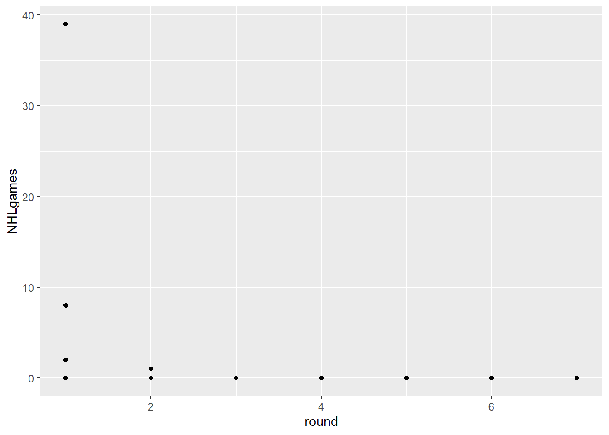
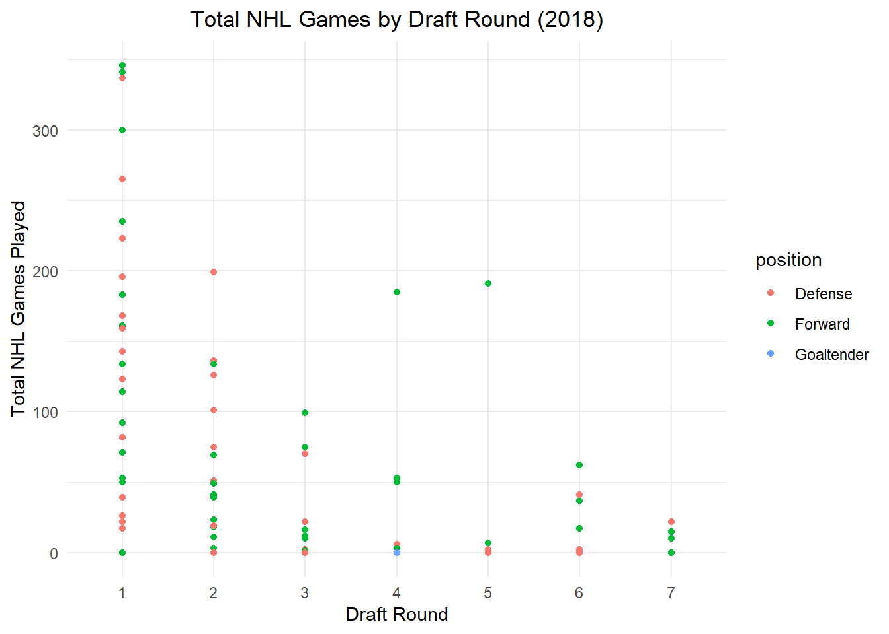

library(ggplot2)ggplot(Draft_2022, aes(x = round, y = NHLgames)) +geom_point()

Figure 1:The players that were drafted in June of 2022 didn’t play to much the last season.
Things wrong with this Data Visualization:
1.Overplotting: All those points on the y=0 line represent about 32 players each. Can you think of a way that adding extra channels might help?
2.Labelling: Can we create a solid figure caption and better axis labels for this figure? In your caption, please specify the task(s) the visualizaiton is intended to facilitate, as well as the marks, channels, and key-value pairs used.
3.Key-Value pairs: Looks like we are using “round” as a continuous variable. Can we change this to an ordered factor?
1.Overplotting: All those points on the y=0 line represent about 32 players each. Can you think of a way that adding extra channels might help?
2.Labelling: Can we create a solid figure caption and better axis labels for this figure? In your caption, please specify the task(s) the visualizaiton is intended to facilitate, as well as the marks, channels, and key-value pairs used.
3.Key-Value pairs: Looks like we are using “round” as a continuous variable. Can we change this to an ordered factor?
Code
library(dplyr)library(ggplot2)SummaryDraft2018 <- Draft_2018 %>%group_by(playerId, round, overall, position, name) %>%summarise(totgames =sum(NHLgames, na.rm =TRUE), .groups ='drop') # Handle NA valuesSummaryDraft2018$round <-factor(SummaryDraft2018$round, levels =sort(unique(SummaryDraft2018$round)), ordered =TRUE)ggplot(SummaryDraft2018, aes(x = round, y = totgames, color = position)) +geom_point() +theme_minimal() +ggtitle("Total NHL Games by Draft Round (2018)") +xlab("Draft Round") +ylab("Total NHL Games Played") +theme(plot.title =element_text(hjust =0.5))

Figure 3: In your caption, please specify the task(s) the visualization is intended to facilitate, as well as the marks, channels, and key-value pairs used.
1.We are trying to address the notion of trading a pick from round 1 for picks from round 2 and 3. Add visual channels to this plot that will help us make that decision.
2.Create a caption and better axis labels for this figure.
3.What if we wanted to use more than just the 2018 draft class?
Figure 5:
Source Code
---title: Hockey Analyticssubtitle: Visaulization for Tabular Dataauthor: Geraline Trossi-TorresDate: 2024-02-25categories: [Assignment, DataViz, Visualization]image: Profile3.jpgcode-fold: truecode-tools: truedescription: 2024 NHL Draft Picks---## DATA SET FOR NHL DRAFT PICKS```{r}library(readxl)NHL_Drafts <-read_excel("NHLDraftsPicks.xlsx")knitr::kable(head(NHL_Drafts,10))library(tidyverse)```## SIMPLE SCATTERPLOT```{r}Draft_2022 <- NHL_Drafts %>%filter(draftyear==2022)``````{r}library(ggplot2)ggplot(Draft_2022, aes(x = round, y = NHLgames)) +geom_point()```**Figure 1:**The players that were drafted in June of 2022 didn’t play to much the last season.Things wrong with this Data Visualization: 1.**Overplotting:** All those points on the y=0 line represent about 32 players each. Can you think of a way that adding extra channels might help? 2.**Labelling:** Can we create a solid figure caption and better axis labels for this figure? In your caption, please specify the task(s) the visualizaiton is intended to facilitate, as well as the marks, channels, and key-value pairs used. 3.**Key-Value pairs:** Looks like we are using “round” as a continuous variable. Can we change this to an ordered factor?```{r}library(ggplot2)library(ggridges)Draft_2022$round <-factor(Draft_2022$round, levels =sort(unique(Draft_2022$round)), ordered =TRUE)ggplot(Draft_2022, aes(x = NHLgames, y = round)) +geom_density_ridges(aes(height = ..density..), jittered_points =TRUE, scale =3) +theme_minimal() +ggtitle("NHL 2022 Draft Players Density") +xlab("NHL Games Played") +ylab("Draft Round")+theme(plot.title =element_text(hjust =0.5))```**Figure 2:**specify the task(s) the visualizaiton is intended to facilitate, as well as the marks, channels, and key-value pairs used## EXPANDED SCATTERPLOT```{r}library(dplyr)library(ggplot2)Draft_2018 <- NHL_Drafts %>%filter(draftyear ==2018& postdraft <6)ggplot(Draft_2018, aes(x = round, y = NHLgames)) +geom_point()```**Figure 1:**```{r}SummaryDraft2018 <- Draft_2018 %>%group_by(playerId, round, overall, position, name) %>%summarise(totgames=sum(NHLgames))ggplot(SummaryDraft2018, aes(x=round, y=totgames))+geom_point()```**Figure 2:** 1.**Overplotting:** All those points on the y=0 line represent about 32 players each. Can you think of a way that adding extra channels might help? 2.**Labelling:** Can we create a solid figure caption and better axis labels for this figure? In your caption, please specify the task(s) the visualizaiton is intended to facilitate, as well as the marks, channels, and key-value pairs used. 3.**Key-Value pairs:** Looks like we are using “round” as a continuous variable. Can we change this to an ordered factor?```{r}library(dplyr)library(ggplot2)SummaryDraft2018 <- Draft_2018 %>%group_by(playerId, round, overall, position, name) %>%summarise(totgames =sum(NHLgames, na.rm =TRUE), .groups ='drop') # Handle NA valuesSummaryDraft2018$round <-factor(SummaryDraft2018$round, levels =sort(unique(SummaryDraft2018$round)), ordered =TRUE)ggplot(SummaryDraft2018, aes(x = round, y = totgames, color = position)) +geom_point() +theme_minimal() +ggtitle("Total NHL Games by Draft Round (2018)") +xlab("Draft Round") +ylab("Total NHL Games Played") +theme(plot.title =element_text(hjust =0.5))```**Figure 3:** In your caption, please specify the task(s) the visualization is intended to facilitate, as well as the marks, channels, and key-value pairs used.##SCATTERPLOT WITH OVERALL DRAFT POSITION```{R}ggplot(SummaryDraft2018, aes(x=overall, y=totgames))+geom_point()```**Figure 4:** 1.We are trying to address the notion of trading a pick from round 1 for picks from round 2 and 3. Add visual channels to this plot that will help us make that decision. 2.Create a caption and better axis labels for this figure. 3.What if we wanted to use more than just the 2018 draft class?**Figure 5:**